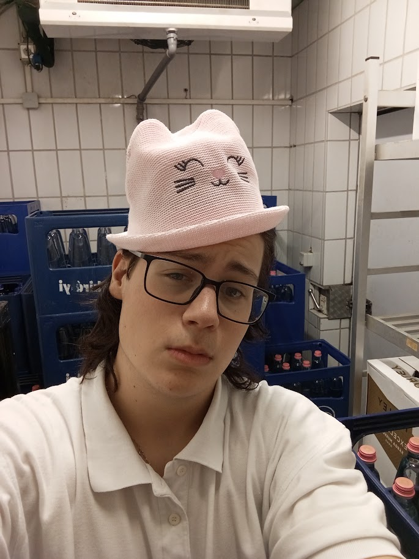
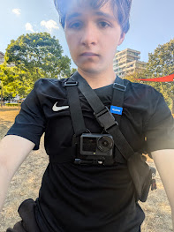

Starfall Hollow
Fedezd fel egy elfeledett világ romjait és titkait.
Részletek →Kreatív és egyedi játékokat fejlesztünk a sulis projektmunkánk keretében. Fedezd fel a legújabb fejlesztéseinket, játékötleteinket és a műhelyünk folyamatait!
Tudj meg többet ↓
Fedezd fel egy elfeledett világ romjait és titkait.
Részletek →
Merészkedj le a föld alá, és fejtsd meg a mélység rejtélyeit.
Részletek →
Élj túl egy idegen bolygón, és keresd meg az ismeretlen jel forrását.
Részletek →A három játékkép ChatGPT-vel készült. A játékok bemutatóoldalát Marcell készítette.
A MySoftware egy három fős elhivatott csapat, akik az iskolai IKT projektmunka keretében közösen valósítanak meg kreatív indie játékötleteket.

András a Műhely oldalt készítette, és részt vett a színpaletta kialakításában. A Git és a Flexbox használatát gyakorolta. Következő célja a szövegek és a mobilnézet pontosítása.

Zsombi a főoldalt és a stúdió arculatát tervezte. A CSS-változók és a Flexbox használatát gyakorolta. Következő célja a közös stílusok összehangolása a többi oldallal.
Marcell a Munkáink oldal HTML-szerkezetét és CSS-megjelenését készítette. Részt vett a színpaletta kialakításában. Következő célja a játékok rendezettebb, reszponzív elrendezése.
Játékainkat azoknak készítjük, akik szeretik a felfedezést, a különleges világokat és a történetközpontú kalandokat. Az iskolai projekt célja, hogy közösen tervezzünk és mutassunk be saját játékötleteket.
Egy háromoldalas portfólióhonlapot készítünk, amely bemutatja a csapatot, a játékötleteinket és a közös munkánkat.